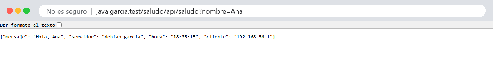
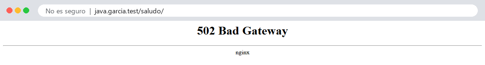
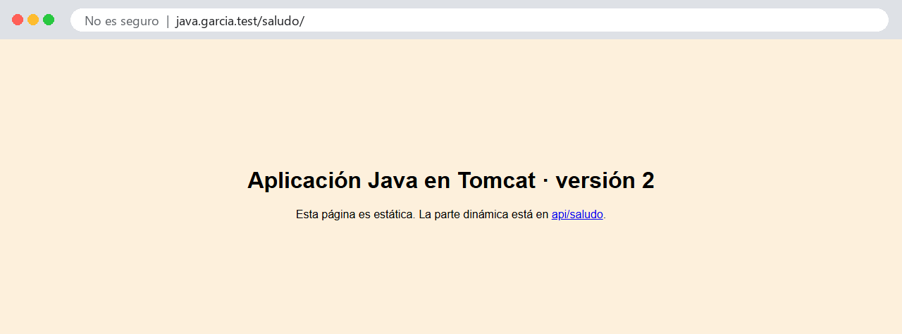

Práctica 3.1 - Aplicación Java en Tomcat detrás de Nginx¶
Cuándo se hace
Al terminar el bloque 2 de la teoría del Tema 3, con las prácticas del Tema 2 terminadas. Se hace en la máquina principal (192.168.56.10); no necesitas los clones.
Objetivos
Al terminar esta práctica deberás ser capaz de:
- Instalar un entorno Java (JDK, Maven y Tomcat) desde los repositorios de Debian.
- Crear un proyecto Maven y construir con él un WAR.
- Desplegar el WAR en Tomcat y seguir el despliegue en el registro.
- Publicar Tomcat a través de Nginx y pasarle la IP real del cliente.
- Hacer que Tomcat solo acepte conexiones locales.
- Desplegar una versión nueva y saber volver a la anterior.
1. Qué vas a montar¶
Tu ordenador debian-tuapellido (192.168.56.10)
192.168.56.1 ───► Nginx :80 ──── java.tuapellido.test ───► Tomcat 127.0.0.1:8080
└── /saludo/ (saludo.war)
Una aplicación Java mínima: una página estática y un servlet en /saludo/api/saludo que responde en JSON con un saludo, el nombre del servidor, la hora y la IP del cliente. Lo importante no es la aplicación, sino el camino completo: código → Maven → WAR → Tomcat → Nginx → navegador.
En los ejemplos, el apellido es garcia. Usa el tuyo en todos los nombres.
2. Instalar Java, Maven y Tomcat¶
default-jdk-headless: el JDK de Debian 13 (OpenJDK 21) sin librerías gráficas. El JDK incluye la JVM y el compiladorjavac.maven: la herramienta de construcción.tomcat10: Tomcat 10.1, ya instalado como servicio y arrancado.
Son 64 paquetes: unos 155 MB de descarga y 350 MB en disco. Ten paciencia; al terminar, Tomcat tarda todavía un poco en arrancar la primera vez.
Comprueba las versiones y el servicio:
openjdk version "21.0.13" 2026-10-20
OpenJDK Runtime Environment (build 21.0.13+9-1-deb13u2-Debian)
OpenJDK 64-Bit Server VM (build 21.0.13+9-1-deb13u2-Debian, mixed mode, sharing)
Apache Maven 3.9.9
Las versiones exactas pueden ser algo más nuevas en tu máquina: Debian publica actualizaciones de seguridad. En systemctl status debes ver active (running) y, en la línea Memory, unos 90 MB: es lo que ocupa una JVM con Tomcat sin nada tuyo desplegado, y subirá a unos 150 MB con tu aplicación. Compara con systemctl status nginx: unos 6 MB.
Ahora mismo Tomcat escucha en el puerto 8080 de todas las interfaces. Entra desde tu navegador en http://192.168.56.10:8080: verás la página It works ! de Tomcat. Lo cerrarás en el apartado 7.
3. Crear el proyecto Maven¶
Trabaja en tu carpeta personal. Crea la estructura de carpetas que espera Maven:
saludo/
├── pom.xml
└── src/main/
├── java/es/sjo/daw/SaludoServlet.java ← código Java
└── webapp/index.html ← ficheros web estáticos
El pom.xml¶
<?xml version="1.0" encoding="UTF-8"?>
<project xmlns="http://maven.apache.org/POM/4.0.0"
xmlns:xsi="http://www.w3.org/2001/XMLSchema-instance"
xsi:schemaLocation="http://maven.apache.org/POM/4.0.0 https://maven.apache.org/xsd/maven-4.0.0.xsd">
<modelVersion>4.0.0</modelVersion>
<groupId>es.sjo.daw</groupId>
<artifactId>saludo</artifactId>
<version>1.0</version>
<packaging>war</packaging>
<properties>
<maven.compiler.release>21</maven.compiler.release>
<project.build.sourceEncoding>UTF-8</project.build.sourceEncoding>
</properties>
<dependencies>
<dependency>
<groupId>jakarta.servlet</groupId>
<artifactId>jakarta.servlet-api</artifactId>
<version>6.0.0</version>
<scope>provided</scope>
</dependency>
</dependencies>
<build>
<finalName>saludo</finalName>
</build>
</project>
packagingwar: el artefacto será un WAR.maven.compiler.release21: compila para Java 21, la versión que tienes instalada.jakarta.servlet-api6.0.0 es la versión de servlets de Tomcat 10.1. Conprovided, Maven la usa para compilar pero no la mete en el WAR: en el servidor la pone Tomcat.finalName: el WAR se llamarásaludo.war(sin esto,saludo-1.0.war). Recuerda que el nombre del WAR decide la URL.
El servlet¶
package es.sjo.daw;
import jakarta.servlet.annotation.WebServlet;
import jakarta.servlet.http.HttpServlet;
import jakarta.servlet.http.HttpServletRequest;
import jakarta.servlet.http.HttpServletResponse;
import java.io.IOException;
import java.net.InetAddress;
import java.time.LocalTime;
import java.time.temporal.ChronoUnit;
@WebServlet("/api/saludo")
public class SaludoServlet extends HttpServlet {
@Override
protected void doGet(HttpServletRequest req, HttpServletResponse resp) throws IOException {
String nombre = req.getParameter("nombre");
if (nombre == null || nombre.isBlank()) {
nombre = "mundo";
}
nombre = nombre.replaceAll("[^\\p{L}\\p{N} ]", "");
resp.setContentType("application/json;charset=UTF-8");
resp.getWriter().printf(
"{\"mensaje\": \"Hola, %s\", \"servidor\": \"%s\", \"hora\": \"%s\", \"cliente\": \"%s\"}%n",
nombre,
InetAddress.getLocalHost().getHostName(),
LocalTime.now().truncatedTo(ChronoUnit.SECONDS),
req.getRemoteAddr());
}
}
@WebServlet("/api/saludo"): la ruta que atiende, dentro del contexto. La URL completa será/saludo/api/saludo.req.getParameter("nombre"): lee el?nombre=de la URL. La línea delreplaceAlldeja solo letras, números y espacios: nunca metas en una respuesta lo que te manda el cliente sin limpiarlo.req.getRemoteAddr(): la IP de quien se conecta a Tomcat. Fíjate en ella en los apartados 6 y 7.
La página estática¶
<!DOCTYPE html>
<html lang="es">
<head><meta charset="utf-8"><title>Saludo · Tomcat</title></head>
<body style="font-family:sans-serif;background:#fdf0dc;text-align:center;padding-top:12%">
<h1>Aplicación Java en Tomcat</h1>
<p>Esta página es estática. La parte dinámica está en <a href="api/saludo?nombre=Ana">api/saludo</a>.</p>
</body>
</html>
4. Construir el WAR¶
Desde ~/saludo:
La primera vez, Maven descarga de Maven Central sus propios plugins y la librería de servlets: verás más de doscientas líneas Downloading from central. Se guardan en ~/.m2/repository y las siguientes construcciones ya no descargan nada. El final debe ser este:
[INFO] --- compiler:3.13.0:compile (default-compile) @ saludo ---
[INFO] Recompiling the module because of changed dependency.
[INFO] Compiling 1 source file with javac [debug release 21] to target/classes
[INFO]
[INFO] --- resources:3.3.1:testResources (default-testResources) @ saludo ---
[INFO] skip non existing resourceDirectory /home/garcia/saludo/src/test/resources
[INFO]
[INFO] --- compiler:3.13.0:testCompile (default-testCompile) @ saludo ---
[INFO] No sources to compile
[INFO]
[INFO] --- surefire:2.17:test (default-test) @ saludo ---
[INFO] No tests to run.
[INFO]
[INFO] --- war:3.4.0:war (default-war) @ saludo ---
[INFO] Packaging webapp
[INFO] Assembling webapp [saludo] in [/home/garcia/saludo/target/saludo]
[INFO] Processing war project
[INFO] Copying webapp resources [/home/garcia/saludo/src/main/webapp]
[INFO] Building war: /home/garcia/saludo/target/saludo.war
[INFO] ------------------------------------------------------------------------
[INFO] BUILD SUCCESS
[INFO] ------------------------------------------------------------------------
Fíjate en las fases del ciclo de vida, en orden: compile, test (no hay pruebas) y war, que es la fase package de un proyecto WAR. Mira qué hay dentro del WAR (unzip no viene instalado en Debian, pero el JDK trae jar):
META-INF/
META-INF/MANIFEST.MF
WEB-INF/
WEB-INF/classes/
WEB-INF/classes/es/
WEB-INF/classes/es/sjo/
WEB-INF/classes/es/sjo/daw/
WEB-INF/classes/es/sjo/daw/SaludoServlet.class
index.html
META-INF/maven/es.sjo.daw/saludo/pom.xml
META-INF/maven/es.sjo.daw/saludo/pom.properties
El .java no está: en el servidor solo va el .class compilado. Y no hay ninguna librería en WEB-INF/lib: la de servlets era provided.
Si Maven falla
BUILD FAILURE con cannot find symbol es un error de Java: revisa el código y los import. Si el error habla de release 21, comprueba con java -version que tienes el JDK 21.
5. Desplegar en Tomcat¶
Desplegar es copiar el WAR a la carpeta de aplicaciones de Tomcat:
Tomcat revisa esa carpeta cada pocos segundos. Sigue el despliegue en su registro:
Nov 15 16:40:44 debian-garcia tomcat10[2635]: Deploying web application archive [/var/lib/tomcat10/webapps/saludo.war]
Nov 15 16:40:45 debian-garcia tomcat10[2635]: At least one JAR was scanned for TLDs yet contained no TLDs. Enable debug logging for this logger for a complete list of JARs that were scanned but no TLDs were found in them. Skipping unneeded JARs during scanning can improve startup time and JSP compilation time.
Nov 15 16:40:45 debian-garcia tomcat10[2635]: Deployment of web application archive [/var/lib/tomcat10/webapps/saludo.war] has finished in [1,104] ms
El aviso de los TLD es informativo, no un error. Si en vez de esas líneas ves las del arranque de Tomcat (Server startup in ...), es que todavía no ha revisado la carpeta: espera unos segundos y repite. Mira la carpeta:
total 12
drwxr-xr-x 3 root root 4096 Nov 15 16:38 ROOT
drwxr-x--- 4 tomcat tomcat 4096 Nov 15 16:40 saludo
-rw-r--r-- 1 root root 3204 Nov 15 16:40 saludo.war
Tomcat ha descomprimido el WAR en la carpeta saludo/ (de su propiedad) y lo ha publicado en el contexto /saludo. ROOT es la aplicación de bienvenida, en /. Prueba la aplicación desde la propia máquina:
6. Publicar con Nginx¶
El sitio¶
En la práctica 2.4 escribiste a mano cuatro proxy_set_header. Debian trae esas mismas cuatro líneas en un fichero que puedes incluir:
proxy_set_header Host $host;
proxy_set_header X-Real-IP $remote_addr;
proxy_set_header X-Forwarded-For $proxy_add_x_forwarded_for;
proxy_set_header X-Forwarded-Proto $scheme;
Crea el sitio:
server {
listen 80;
listen [::]:80;
server_name java.garcia.test;
access_log /var/log/nginx/java.access.log;
error_log /var/log/nginx/java.error.log;
location / {
proxy_pass http://127.0.0.1:8080;
include proxy_params;
}
}
Actívalo, comprueba y recarga, como siempre:
sudo ln -s /etc/nginx/sites-available/java.garcia.test /etc/nginx/sites-enabled/
sudo nginx -t
sudo systemctl reload nginx
En el fichero hosts de tu ordenador, añade el nombre a la línea de la .10:
Entra en http://java.garcia.test/saludo/ y pulsa el enlace. Desde PowerShell:
Funciona, pero el cliente es 127.0.0.1: para Tomcat, quien se conecta es Nginx. Es el mismo problema de la práctica 2.4.
La IP real en Tomcat¶
En Tomcat, lo que hacía el módulo realip de Nginx lo hace una válvula (valve), un componente que procesa la petición antes de que llegue a la aplicación. Edita la configuración:
Busca, casi al final, la válvula AccessLogValve (dentro del bloque <Host>) y añade encima esta línea:
<Valve className="org.apache.catalina.valves.RemoteIpValve" />
<Valve className="org.apache.catalina.valves.AccessLogValve" directory="logs"
prefix="localhost_access_log" suffix=".txt"
RemoteIpValve lee la cabecera X-Forwarded-For y la usa como IP del cliente, pero solo si la conexión viene de una dirección interna, como 127.0.0.1: es el equivalente de set_real_ip_from. Tomcat no lee su configuración en caliente; reinícialo:
El comando vuelve enseguida, pero Tomcat tarda unos segundos en estar listo: si la petición siguiente da 502, espera y repite (lo verás con calma en el apartado 8).
{"mensaje": "Hola, Ana", "servidor": "debian-garcia", "hora": "16:41:35", "cliente": "192.168.56.1"}
En el navegador, http://java.garcia.test/saludo/api/saludo?nombre=Ana:

7. Que nadie se salte el proxy¶
Tomcat sigue respondiendo directamente a cualquiera en el 8080:
En la práctica 2.4 lo resolviste con una regla en el servidor de detrás. Aquí es más sencillo, porque Tomcat está en la misma máquina que Nginx: basta con que escuche solo en local. En /etc/tomcat10/server.xml, busca el conector del puerto 8080 y añade address="127.0.0.1":
<Connector port="8080" protocol="HTTP/1.1"
address="127.0.0.1"
connectionTimeout="20000"
redirectPort="8443"
maxParameterCount="1000"
/>
[::ffff:127.0.0.1] es la forma en que Java escribe la 127.0.0.1 cuando escucha en IPv6: solo local. Prueba las dos rutas desde tu ordenador:
curl.exe -s -o NUL -w "%{http_code}\n" http://192.168.56.10:8080/saludo/
curl.exe -s -o NUL -w "%{http_code}\n" http://java.garcia.test/saludo/
000 significa que curl ni siquiera ha conseguido conectar: no hay nadie escuchando en esa dirección. El primero tarda un par de segundos porque Windows reintenta la conexión antes de rendirse. A través del proxy, 200.
8. Cuando Tomcat no responde: 502¶
Recarga http://java.garcia.test/saludo/:

La página de error es de Nginx, no de Tomcat. En el registro de errores del sitio:
2026/11/15 16:44:32 [error] 3090#3090: *13 connect() failed (111: Connection refused) while connecting to upstream, client: 192.168.56.1, server: java.garcia.test, request: "GET /saludo/ HTTP/1.1", upstream: "http://127.0.0.1:8080/saludo/", host: "java.garcia.test"
El mismo Connection refused de la práctica 2.4: Nginx funciona, pero no hay nadie en 127.0.0.1:8080. Vuelve a arrancarlo:
Tomcat tarda unos segundos en arrancar y desplegar las aplicaciones; durante ese tiempo, seguirás viendo el 502.
9. Desplegar una versión nueva (y volver atrás)¶
Antes de sustituir nada, guarda la versión que funciona:
Cambia la aplicación: en src/main/webapp/index.html, cambia el encabezado por <h1>Aplicación Java en Tomcat · versión 2</h1>, y en el pom.xml, pon <version>2.0</version>. Construye y despliega:
Nov 15 16:48:13 debian-garcia tomcat10[3445]: Undeploying context [/saludo]
Nov 15 16:48:13 debian-garcia tomcat10[3445]: Deploying web application archive [/var/lib/tomcat10/webapps/saludo.war]
Nov 15 16:48:15 debian-garcia tomcat10[3445]: At least one JAR was scanned for TLDs yet contained no TLDs. Enable debug logging for this logger for a complete list of JARs that were scanned but no TLDs were found in them. Skipping unneeded JARs during scanning can improve startup time and JSP compilation time.
Nov 15 16:48:15 debian-garcia tomcat10[3445]: Deployment of web application archive [/var/lib/tomcat10/webapps/saludo.war] has finished in [1,268] ms
Tomcat ha detectado el WAR nuevo, ha retirado la versión anterior (Undeploying) y ha desplegado la nueva, sin reiniciar. Como en el apartado 5, si el registro aún no lo muestra, espera unos segundos. Recarga http://java.garcia.test/saludo/:

Ahora imagina que la versión 2 tiene un fallo grave. Volver atrás es un solo comando:
Comprueba en el registro y en el navegador que vuelve la versión 1. Después, despliega otra vez la 2 para dejarla como versión final.
En el mundo real
Nadie guarda las versiones en su carpeta personal: los artefactos de cada versión se guardan en un repositorio de artefactos (Nexus, Artifactory, GitHub Packages), que es justo adonde los sube mvn deploy. Y el despliegue lo hace un sistema automático (Tema 7).
10. Haz la instantánea¶
Apaga la máquina y toma una instantánea: p3.1-tomcat.
Cuestiones finales¶
Cuestión 1
¿Qué hace exactamente mvn package? Nombra las fases que ha ejecutado en tu proyecto y di dónde ha dejado el resultado. ¿Qué haría además mvn install?
Cuestión 2
¿Por qué la URL de tu servlet es /saludo/api/saludo y no /api/saludo? ¿Qué harías para que la aplicación respondiera en la raíz de java.tuapellido.test?
Cuestión 3
Antes de añadir RemoteIpValve, la aplicación decía que el cliente era 127.0.0.1. ¿Por qué? ¿Qué riesgo habría si la válvula creyera la cabecera X-Forwarded-For viniera de quien viniera?
Cuestión 4
En la práctica 2.4 cerraste el servidor de detrás con una regla if en Nginx. Aquí has usado address="127.0.0.1". ¿Por qué aquí se puede y allí no?
Cuestión 5
Tras sustituir el WAR, Tomcat despliega la versión nueva sin reiniciar; tras editar server.xml, hay que reiniciarlo. ¿Qué diferencia hay entre los dos cambios?
Entrega¶
Igual que en las prácticas anteriores: documento de evidencias (40 %) y demostración en clase (60 %).
Parte 1 — Documento de evidencias (40 %)¶
Un PDF llamado P3.1-Apellido-Nombre.pdf con portada, las evidencias (en texto, con comando y prompt) y las respuestas a las cuestiones.
| # | Qué hay que demostrar | Dónde | Comando cuya salida se pega |
|---|---|---|---|
| 1 | Las versiones instaladas | Principal | java -version y mvn -v |
| 2 | El proyecto Maven | Principal | cat ~/saludo/pom.xml y find ~/saludo/src -type f |
| 3 | La construcción | Principal | Las últimas líneas de mvn package (desde --- war) |
| 4 | El contenido del WAR | Principal | jar tf ~/saludo/target/saludo.war |
| 5 | El despliegue | Principal | sudo journalctl -u tomcat10 -n 4 tras copiar el WAR |
| 6 | La configuración de Nginx | Principal | cat /etc/nginx/sites-available/java.tuapellido.test |
| 7 | Los cambios en Tomcat | Principal | sudo grep -n -e 'address=' -e 'RemoteIpValve' /etc/tomcat10/server.xml (la línea con ::1 es del conector AJP, que viene comentado) |
| 8 | Tomcat solo escucha en local | Principal | sudo ss -tlnp (las líneas de los puertos 80 y 8080) |
| 9 | La aplicación, con la IP real, a través del proxy | Tu ordenador | curl.exe "http://java.tuapellido.test/saludo/api/saludo?nombre=TuNombre" |
| 10 | El 8080 no es accesible desde fuera | Tu ordenador | Los dos curl.exe del apartado 7 |
| 11 | El 502 y su causa |
Principal | La última línea de java.error.log con Tomcat parado |
| 12 | El cambio de versión | Principal | sudo journalctl -u tomcat10 -n 4 tras desplegar la versión 2 |
Parte 2 — Demostración en clase (60 %)¶
Mini entrevista individual en la mesa del profesor, con la máquina encendida: muestras la aplicación en java.tuapellido.test, haces la tarea que se te pida (por ejemplo, un cambio en la aplicación y su despliegue) y explicas una decisión o un concepto.
Criterios de evaluación¶
| Parte | Criterio | Peso |
|---|---|---|
| Documento | Las doce evidencias están completas, en texto y explicadas | 25 % |
| Documento | Las cinco cuestiones están respondidas con corrección y criterio propio | 15 % |
| Demostración | La aplicación responde en java.tuapellido.test con la IP real, y el 8080 no es accesible desde fuera |
20 % |
| Demostración | Realizas la tarea que se te pide y explicas lo que haces | 20 % |
| Demostración | Explicas una decisión o un concepto con tus palabras | 20 % |
Antes de entregar, comprueba que…¶
- ☐
mvn packagetermina enBUILD SUCCESSytarget/saludo.warexiste. - ☐
http://java.tuapellido.test/saludo/muestra la versión 2 de la página. - ☐
api/saludodevuelve tu IP real (192.168.56.1) como cliente. - ☐
http://192.168.56.10:8080no responde desde tu ordenador. - ☐ Tienes guardado
~/saludo-1.0.war. - ☐ Existe la instantánea
p3.1-tomcat. - ☐ El archivo se llama
P3.1-Apellido-Nombre.pdf.